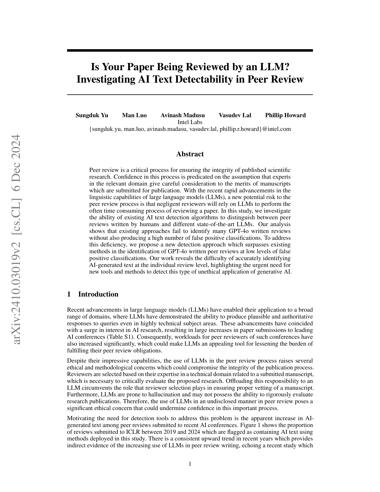

Figure 1
피어 리뷰에서 LLM이 생성한 텍스트를 개별 리뷰 수준에서 탐지하는 문제를 최초로 체계적으로 조사한 연구이다. GPT-4o와 Llama-3.1-70B로 ICLR 논문에 대한 16,000개의 AI 리뷰를 생성하고, 기존 AI 텍스트 탐지 방법(RoBERTa, Longformer, Originality AI, LLM-as-judge)의 성능을 평가한 결과, 낮은 false positive rate(FPR)에서 GPT-4o 리뷰 탐지가 매우 어렵다는 것을 발견한다. 이를 해결하기 위해 Anchor Embeddings Detection 방법을 제안하여, FPR 5%에서 GPT-4o 리뷰의 97%를 탐지하는 성과를 달성한다.
AI 학회 논문 투고량이 급증하면서(ICLR: 2019년 1,565편 -> 2024년 7,306편) 리뷰어 부담이 가중되고 있으며, 이에 따라 LLM을 이용한 리뷰 작성의 유혹이 커지고 있다. 실제로 ICLR 2024 리뷰 중 AI 생성으로 추정되는 비율이 뚜렷한 상승 추세를 보이며, 최근 연구에서 6.5~16.9%의 리뷰가 LLM을 실질적으로 활용했을 수 있다고 추정했다. 그러나 기존 AI 텍스트 탐지 연구는 코퍼스 수준의 통계적 분석에 머물렀고, 실제 운영에 필요한 개별 리뷰 수준의 탐지 가능성은 미탐구 상태였다. 특히 false positive(인간 리뷰를 AI로 오판)의 심각한 윤리적 결과를 고려할 때, 낮은 FPR에서의 탐지 성능이 핵심적이다.
본 논문은 피어 리뷰에서의 AI 텍스트 탐지라는 시의적절하고 실용적으로 중요한 문제를 다룬다. 기존 AI 텍스트 탐지 방법들이 피어 리뷰 맥락에서 어떤 한계를 보이는지를 체계적으로 실증하고, 특히 GPT-4o 리뷰의 탐지가 낮은 FPR에서 극히 어렵다는 발견은 학술 커뮤니티에 중요한 경고를 제공한다.
제안된 Anchor Embeddings 방법은 직관적이면서도 효과적이다. "동일 논문에 대한 AI 리뷰들은 의미적으로 수렴한다"는 가정이 실험적으로 잘 뒷받침되며, FPR 5%에서 97% TPR이라는 결과는 기존 방법 대비 월등하다. 다만 이 방법은 완전 AI 생성 리뷰에 최적화되어 있으며, 인간이 AI 출력을 편집한 혼합 리뷰에 대한 성능은 미지수이다.
LLM judge의 판단 근거 분석(Table S4)은 특히 가치 있다. AI 판정이 "awkward sentence structure", "non-native language use"에 의존한다는 발견은 AI 탐지 도구가 비영어권 연구자를 차별할 수 있음을 시사하며, 이는 탐지 기술 개발에서 공정성 고려가 필수적임을 강조한다. 논문의 범위가 비교적 좁고(4페이지 본문) 실험이 ICLR에 한정되지만, 문제 정의와 방법론의 명확성, 그리고 실용적 시사점이 뛰어난 연구이다.
| 항목 | 점수 (1-5) |
|---|---|
| Novelty | 4 |
| Technical Soundness | 4 |
| Significance | 3 |
| Overall | 3.7 |
총평: Anchor Embeddings 기법으로 AI 작성 피어 리뷰를 탐지하는 Intel Labs 연구로, 학술 무결성 보호라는 실질적 필요에 응답하는 기술적으로 견고한 접근을 제시한다.